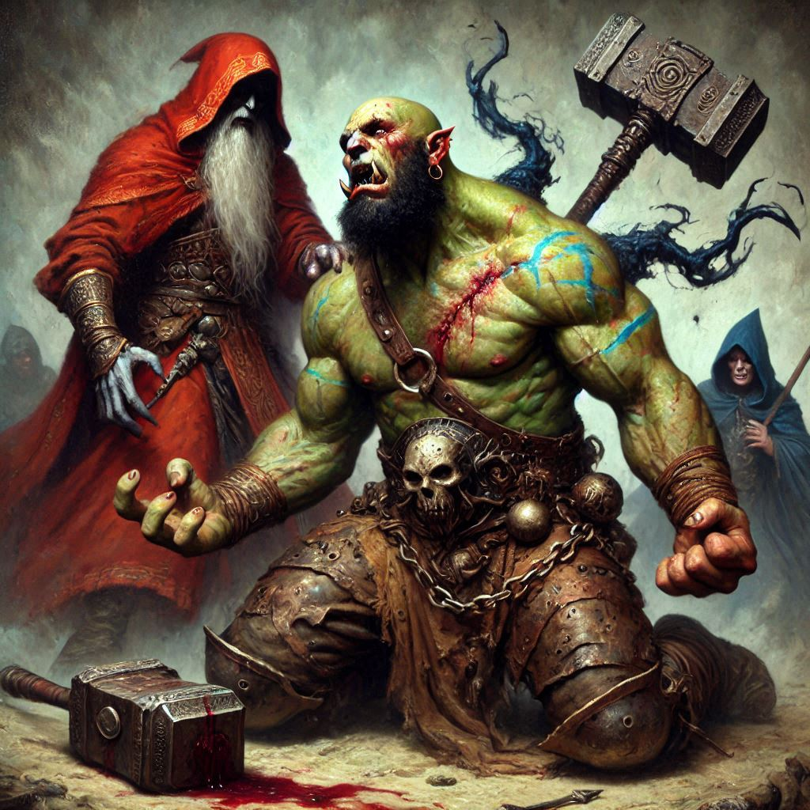

The Fall of Jorsh
Your heart races as you watch Baider, surrounded by dark elves, fighting alone against the relentless onslaught. His movements are fierce, but exhaustion dulls his once-powerful strikes. You glance back at Jorsh—battered, his magic failing under Varis’s cruel grip. You know staying with Jorsh could turn the tide, but Baider is being overrun. The weight of a thousand memories—of the man who raised you, who taught you to wield a blade and survive—compels you. You cannot leave him. The decision grips you with a dreadful clarity. You turn away from Jorsh and charge toward Baider, a storm of resolve and desperation propelling each step.
Dark elves block your way, but you are unstoppable. Your sword cuts a path, searing through shadows, limbs, and armor. You feel the sting of blades and the cold pulse of dark magic on your skin, but nothing will keep you from Baider. You shout his name, the sound swallowed by the chaos, but he glances up, seeing you draw nearer, his face a conflicted mix of pride and sorrow. He knows why you’ve come. He knows what this will cost.
Baider fights with renewed vigor as you join him, a deadly duo in the midst of a ruthless swarm. He covers your blind spots, just like he always did, and together you press back the onslaught. For a moment, it almost feels like you have a chance. But the numbers are overwhelming, and more shadows emerge from the dark.
Out of the corner of your eye, you see Varis. The dark elf Minister, radiant with corrupted magic, has not let Jorsh slip his grasp. Jorsh’s defenses crumble under Varis’s brutal, unyielding power. You can feel the connection between you and Jorsh, a fragile thread that tugs at your heart, almost drawing you back to his side. But as you look at Baider, the unspoken bond between father and daughter drives you onward, pushing back your despair.
Suddenly, a dark elf lunges, and Baider lets out a strangled cry. You turn to see him stagger, his side slashed deeply, blood darkening his armor. Rage floods your senses, and you strike down his attacker. But as you turn back, you realize Baider’s injuries are worse than you thought. He is struggling to stay upright, his eyes flickering with pain and the grim acceptance of fate.
You don’t even have time to process it. A blade sinks into your shoulder, pulling a gasp from your lips. Pain flares, but you drive yourself forward, cutting down another enemy. Desperation claws at you, and you look to Jorsh, hoping he’s still holding on, that his magic might flare one last time to bring you all through. But he is crumpling under Varis’s relentless assault, his face twisted in agony as Varis calls upon a deeper, darker power. You feel the familiar pull—the shared connection between you and Jorsh—start to fade.
Baider’s breath comes in short gasps. “Kira,” he chokes, his voice barely audible above the clash of metal and the growls of his enemies. You hold him up, gripping his arm, pleading for him to stay with you. The dark elves close in around you, but Baider looks at you, a fierce pride shining through the pain.
“Don’t let them... take you,” he manages, just as a dark elf drives a blade into his side. He falls, and a searing agony lances through you as the light fades from his eyes. A fire lights within you, and you roar, lashing out at the elves surrounding you, an unstoppable fury in each strike.
But it’s not enough. The tide overwhelms you as one blade after another lands, pain tearing through every fiber of your being. You catch a glimpse of Jorsh just as he falls beneath Varis’s hand. The Minister’s face contorts in triumph as he steps over Jorsh’s broken form. With a resonant chant, he raises his staff, summoning a swirling vortex that grows in intensity. You recognize the shape forming within—the demonic presence you feared: Yaldaboath.
The creature emerges, vast and terrible, its form twisting reality as it steps into the world. Its eyes burn with malice as it takes in the scene. With a flick of its taloned hand, Jorsh’s lifeless form is lifted into the air and drawn toward it, consumed by dark flames. His memory, his essence, gone in an instant.
You keep fighting, refusing to surrender. But your strength is fading, and you feel yourself slowing, as if time is draining away. The last thing you see is Yaldaboath’s monstrous, smiling gaze fixed on you, its darkness reaching out, consuming all.
As the final blow falls, you feel a profound stillness settle, the world slipping away. But even as darkness closes in, a small, stubborn light remains within you—a shard of hope, faint but unyielding. It’s a hope that, somehow, the sacrifice will matter, that even here, amid shadows and ruin, you have fought with everything. And as you draw your last breath, you realize that is enough.